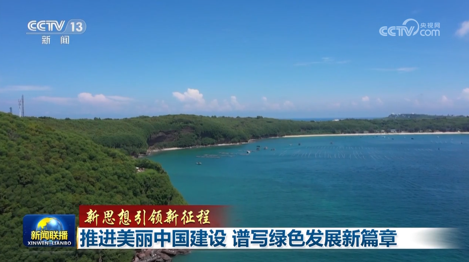
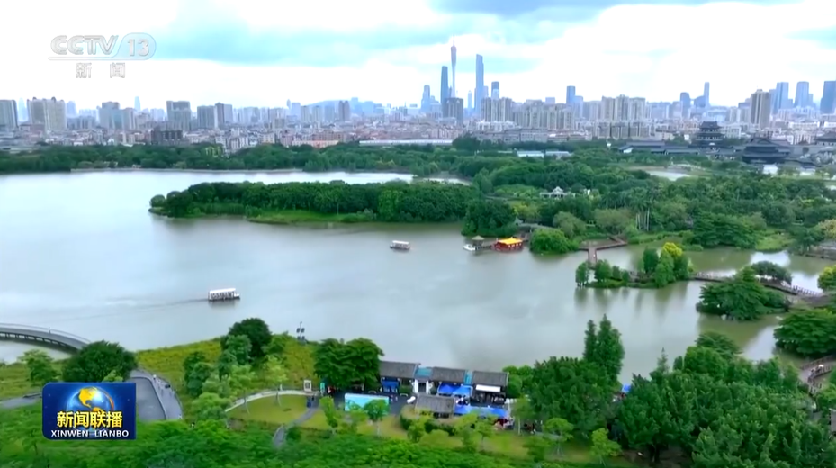

习近平强调，要经常性开展政绩观教育，重点抓好对地方党政正职、新提拔干部、年轻干部、 关键岗位干部的教育培训，强化示范引领和反面警示，引导党员、干部始终以正确政绩观担当作为、 履职尽责。要坚持常态化查改问题，对需要长期整改的政绩观偏差突出问题盯紧不放、跟踪问效， 深化新官不理旧账整改整治。结合巡视巡察、审计监督、统计监督等精准发现问题，增强针对性和穿透力， 扎实推动整改。要用好考核指挥棒，完善差异化考核评价体系，树立重实干重实绩的选人用人导向， 让敢于负责、勇于担当、善于作为、实绩突出的干部受到重用。要加强政绩观行为的管理监督， 严格执行民主集中制，对领导干部定期谈话提醒，及时发现并纠正苗头性倾向性问题。
中央党的建设工作领导小组24日召开会议，深入学习贯彻习近平总书记重要指示精神，总结树立和践行正确政绩观学习教育， 研究部署巩固拓展学习教育成果、建立树立和践行正确政绩观长效机制工作。 中共中央政治局常委、中央党的建设工作领导小组组长蔡奇主持会议并讲话， 中共中央政治局常委、中央党的建设工作领导小组副组长李希出席会议并讲话。

会议强调，习近平总书记的重要指示，对学习教育工作和成效给予充分肯定，对巩固拓展学习教育成果、 建立树立和践行正确政绩观长效机制提出明确要求，全党要认真学习领会、全面贯彻落实。
石泰峰、李书磊、穆虹出席会议。 中央党的建设工作领导小组成员等参加会议。
责任编辑：刘光博
关键字：魅力中国 绿色发展 新篇章 新征程